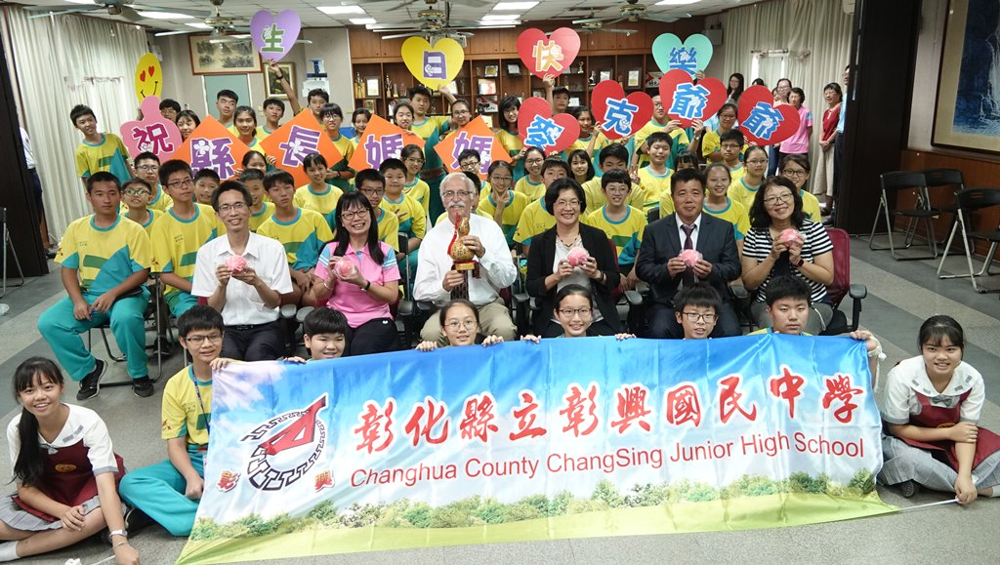
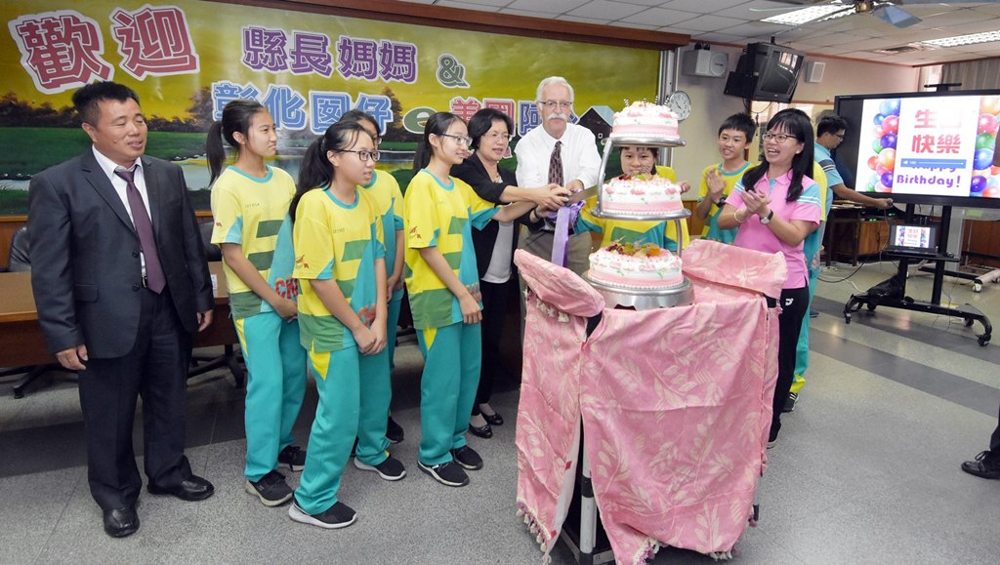
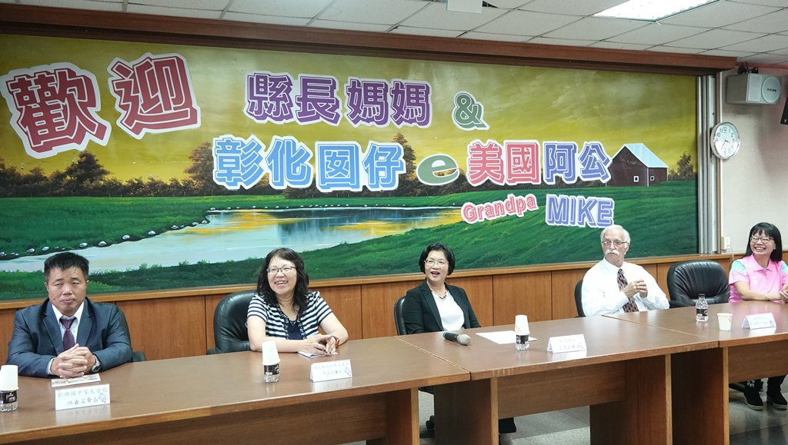
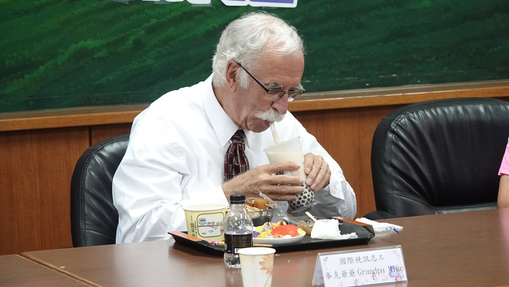

由彰化縣英語資源中心與彰化縣人師教育協會合作推動的「國際視訊英語教學實施計畫」，邀請連續參與五年、人稱「麥克爺爺」的 Michael Dishnow 來台。11 月 7 日下午，彰化縣長王惠美與麥克爺爺一同走訪彰興國中，與學生暢談中西飲食文化，並透過線上票選找出學生最愛的彰化美食。
當天適逢麥克爺爺 76 歲生日，學校特別準備了中西式蛋糕與傳統壽桃，邀請 11 月份的壽星一同慶生，現場洋溢著溫馨歡樂的氣氛。
「麥克爺爺長期關心我們的孩子，每次來台灣都造訪許多學校；五年來透過彰化縣國際視訊英語教學實施計畫，不僅給孩子很多的體會，也讓孩子在英文方面有很大的進步。」 — 彰化縣長 王惠美
麥克爺爺累計走訪超過 150 所學校、服務 750 位以上的學生，透過視訊互動給予孩子溫暖與鼓勵，也為孩子打開英語溝通能力、國際視野與跨文化素養的一扇窗。



